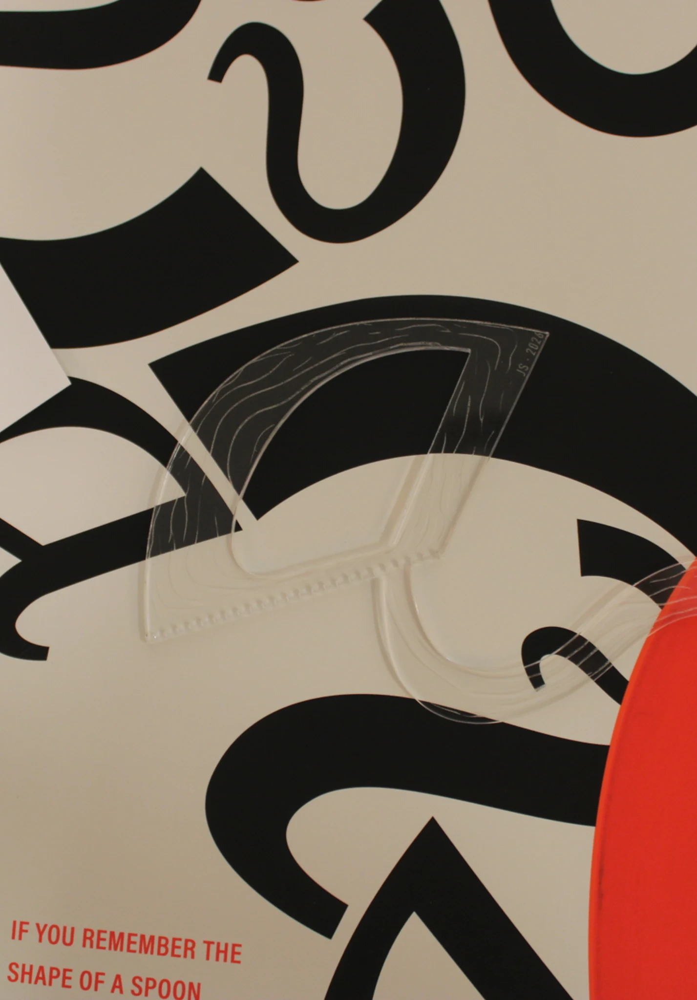
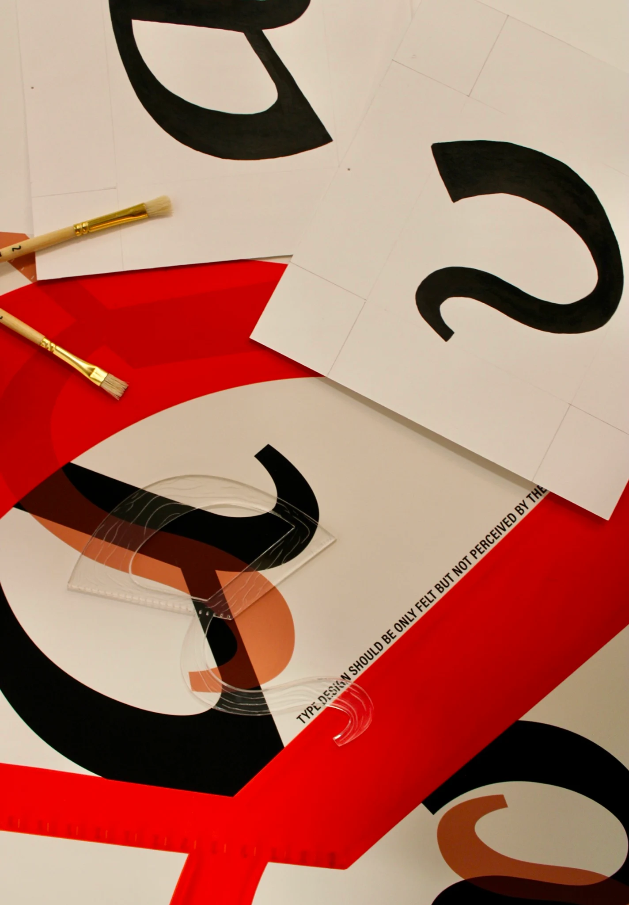
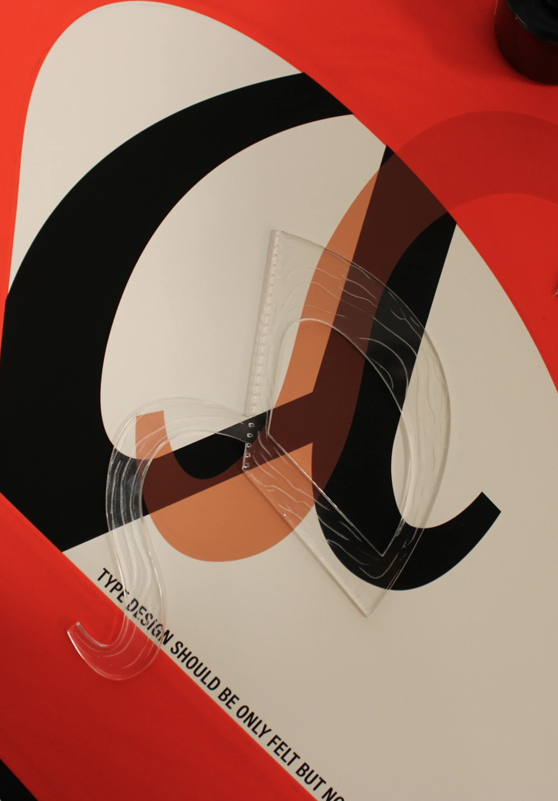
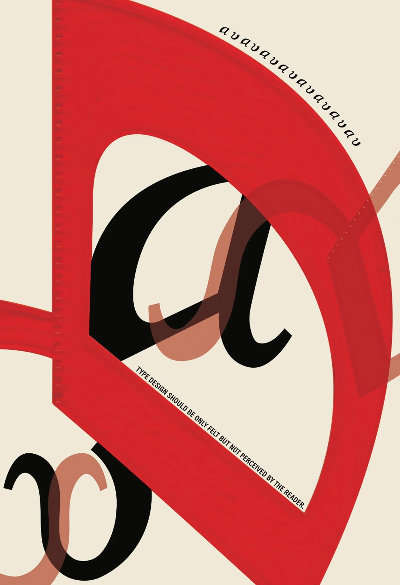
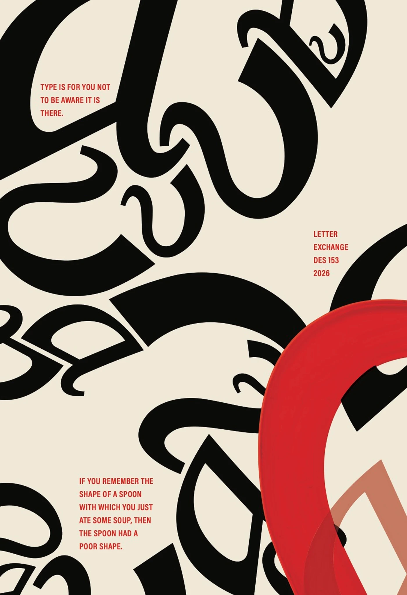

LETTERFORM COMPOSITIONS
2026



TYPE IN COMPOSITION
Building on the Letter Exchange project, these typographic posters explore how letterforms can become visual compositions rather than simply characters used for reading.
Using letters created by classmates, the compositions experiment with overlapping shapes, color, scale, and the relationship between positive and negative space. The resulting posters highlight the visual qualities of typography through abstraction and repetition.
DETAILS
MATERIALS
Adobe Illustrator
Printed Matte Poster
DIMENSIONS
13 in x 19 in


WHERE THE LETTERS BEGAN
The compositions build on the earlier Letter Exchange project, where custom acrylic drafting tools were designed to create individual letterforms. These letters became the starting point for the final posters, transforming a hands-on exploration of typography into a series of graphic compositions.